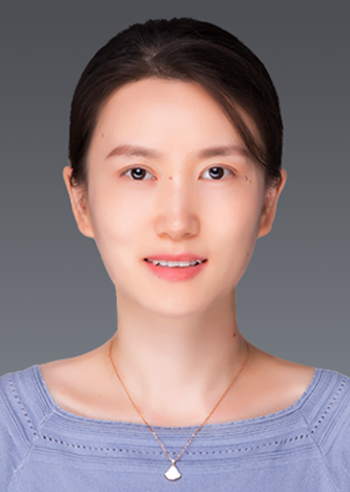

Xin Huang
Prof. at Shanghai Jiao Tong University School of Medicine
Principal Investigator, Clinical Research Institute, Shanghai General Hospital
Selected for the Ministry of Education’s Talent Program, the Shanghai Leading Talent Program, and the Shanghai Pujiang Talent Program.
Her research focuses on stem cells and developmental disorders, particularly pediatric solid tumors and leukemia. She integrates developmental and multi-omics systems biology approaches with combined “wet” and “dry” methods to identify and mechanistically validate novel tumor targets and combination therapies to overcome drug resistance.
RESEARCH EXPERIENCE
-
Professor and Principal Investigator – Shanghai Jiao Tong University School of Medicine
2024.08 – now, Shanghai, China -
Principal Investigator – Institute of Health and Medicine, Chinese Academy of Sciences
2023.06 – 2024.07, Hefei, Anhui Province, China -
Garwood Fellowship Postdoctoral Fellow – St. Jude Children’s Research Hospital
2019.05 – 2023.05, Memphis, TN, USA Mentor: Dr. Jiyang Yu, Interim Chair of Department of Computational Biology
• Identifying hidden drivers and developing novel therapeutics for pediatric solid tumors and leukemia by applying integrative approaches of multiome -
Postdoctoral Fellow – St. Jude Children’s Research Hospital
2017.07 – 2019.05, Memphis, TN, USA Mentor: Dr. Ryan Potts (Now Scientific Vice President at Amgen)
• Discovery of MAGE-directed cancer-specific PROTACs (Proteolysis Targeting Chimera) -
Visiting Scientist – Wellcome Trust Sanger Institute
2017.01 – 2017.06, Cambridge, UK Mentor: Dr. Pengtao Liu (Now Professor, University of Hong Kong)
• Single cell sequencing analysis in Wellcome Trust Sanger Institute -
Ph.D. Student – Institute for Health Sciences, University of Chinese Academy of Sciences
2010.09 – 2017.01, Shanghai, China (Successive Master’s-Doctoral program) Mentor: Dr. Guoqiang Chen (Fellow of the China Academy of Sciences)
• Structure, biophysics, cell and molecular biology study of drug and target protein interaction in diseases including leukemia
• Study abroad program - University of Cambridge